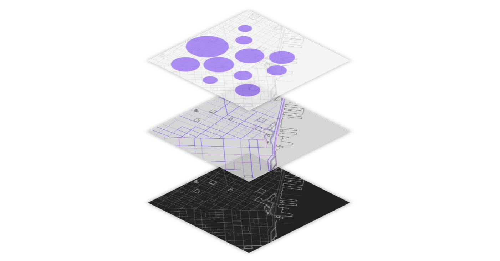

Nomad is a platform developed by Ideo CoLab for the purpose of increasing access to and usability of the more than 3 trillion untapped data streams. I created developer documentation, including narratives of applications for nomad based on emerging technologies, and developed working prototypes during workshops with clients.
Hypothetical Applications
As part of supporting the launch of the nomad platform, our team developed industry-specific examples of the web protocol at work.
| Nomad x Home Insurance |
Nomad x Food Production |
 |
 |
| Nomad might support an AirBnB host by monitoring their appliances and valuables, advocating on their behalf if a breakage or misuse occurs, and ensuring comprehensive accountability, coverage, and repair. |
We imagined what would happen if Nomad intervened in the production and transit process of goods between two fishermen, a restaurant, and a shelter. How might we use streaming data to more intelligently consume our diminishing available resources? |
| Continue Reading ... |
Continue Reading ... |
| Nomad x City Development |
Nomad x Supply Chains |
|  |
 |
| Nomad could leverage real-time data to uncover insights about an urban locale and identify valuable development opportunities. |
Supply chains are sets of long branching trees of dependencies working in tandem to produce a suite of products. Properties of the current method of organization and purchase such as delivery delays, order batching, shortage gaming, and sales and price discounts all contribute to billions of losses and a waste of natural resources. Nomad could bring far greater efficiencies to a cumbersome process. |
Continue Reading ...
|
Continue Reading ...
|
Prototypes
As a result of weekly build sprints for clients I created example nodes using nomad and common public API's.
| Storefront |
My.ID |
 |
 |
| Storefront is a logistics platform with networked physical presence — i.e. a network of vending machines. Merchants can bid for slots and enter into Ethereum-based smart contracts. |
MY.ID is an identity management service that allows individuals to create portable, digital, verified identities by leveraging the Know-Your-Customer datasets from their existing financial institutions. |
Continue Reading ...
|
Continue Reading ...
|
Nomad Proof of Concepts
| CDC |
OpenWeather |
Microsoft Traffic |
Particle |
| Example node for connecting the CDC API to Nomad |
Example node for connecting Open Weather API to Nomad |
Example node for connecting Microsoft Traffic API to Nomad |
Example node for connecting Particle API to Nomad |
| Github Repo |
Github Repo |
Github Repo |
Github Repo |
| Twitter |
Instagram |
Yahoo Weather |
511 |
| Example node for connecting Twitter API to Nomad |
Example node for connecting Instagram API to Nomad |
Example node for connecting Yahoo Weather API to Nomad |
Example node for connecting California's 511 system to Nomad |
| GitHub Repo |
Github Repo |
Download |
Use Node |